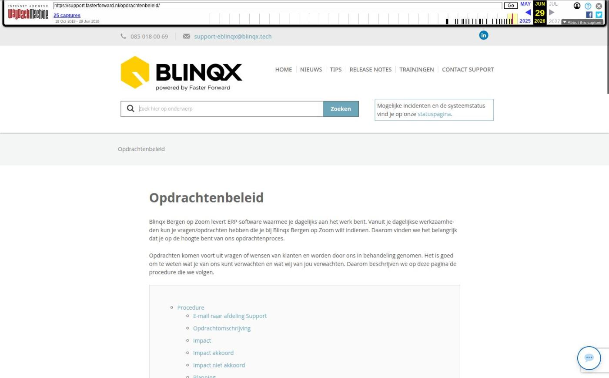

Opdrachtenbeleid

Tekstinhoud
Opdrachtenbeleid
Blinqx Bergen op Zoom levert ERP-software waarmee je dagelijks aan het werk bent. Vanuit je dagelijkse werkzaamheden kun je vragen/opdrachten hebben die je bij Blinqx Bergen op Zoom wilt indienen. Daarom vinden we het belangrijk dat je op de hoogte bent van ons opdrachtenproces.
Opdrachten komen voort uit vragen of wensen van klanten en worden door ons in behandeling genomen. Het is goed om te weten wat je van ons kunt verwachten en wat wij van jou verwachten. Daarom beschrijven we op deze pagina de procedure die we volgen.
Procedure
E-mail naar afdeling Support
Opdrachtomschrijving
Impact
Impact akkoord
Impact niet akkoord
Planning
Uitvoering
Oplevering
Aanvullingen op een opdracht
Facturatie
Rapportage aanvragen
Procedure
E-mail naar afdeling Support
Indien je een vraag of een opdracht hebt, dien je een e-mail te sturen naar support-eblinqx@blinqx.tech. Hier wordt de e-mail in behandeling genomen. Je ontvangt een bevestiging met een ticketnummer. Intern wordt bepaald of je vraag wordt geclassificeerd als vraag of opdracht. Vragen worden in de regel door onze supportafdeling behandeld. Opdrachten worden intern doorgezet naar een consultant of programmeur.
Opdrachtomschrijving
Om een opdracht zo juist en snel mogelijk te verwerken, is het van groot belang dat de benodigde informatie goed wordt aangeleverd. Een duidelijke en juiste omschrijving van de opdracht is daarom van groot belang. Dit zorgt ervoor dat een opdracht correct beoordeeld wordt en uiteindelijk naar wens wordt uitgevoerd.
Impact
Door een consultant of programmeur wordt bepaald hoeveel tijd er aan een opdracht besteed dient te worden. Hiermee wordt de impact (kostenopgave) voor een opdracht bepaald. Deze impact wordt per e-mail gecommuniceerd.
Impact akkoord
Op de door jou ontvangen impact dien je akkoord te geven. Dit doe je door je akkoord te sturen als antwoord op de e-mail met de impact. Wanneer je dit niet op deze manier doet, wordt je reactie niet in ons ticketsysteem geregistreerd. Dit leidt tot onnodige vertraging. \
Impact niet akkoord
Het kan ook zijn dat je niet akkoord gaat met de kostenopgave (impact). Dit dien je ook kenbaar te maken via een antwoord op de e-mail met de impact. Indien je hierin aangeeft dat het ticket niet uitgevoerd dient te worden, sluiten we het ticket. Indien er andere redenen zijn waarom je niet akkoord gaat met de impact nemen we jouw reactie in behandeling.
Planning
Nadat je akkoord hebt gegeven voor een opdracht, worden de werkzaamheden gepland. De doorlooptijd en planning is afhankelijk van de te verrichten werkzaamheden en de beschikbaarheid van onze consultants en/of programmeurs. Vanuit het ticket ontvang je een e-mail van de planning van de opdracht. In overleg kan een opdracht met spoed worden ingepland. Dit kan alleen als onze planning dat toelaat.
Uitvoering
De uitvoering van de werkzaamheden vindt plaats op de aangegeven datum.
Oplevering
Zodra de werkzaamheden van je opdracht zijn uitgevoerd, ontvang je hiervan een e-mail. We maken hierbij onderscheid tussen twee soorten opleveringen:
Oplevering zonder testomgeving
Dit is een oplevering waarbij de werkzaamheden direct op jouw eBlinqxomgeving zijn doorgevoerd.
Oplevering met testomgeving
Dit is een oplevering waarbij de werkzaamheden zijn uitgevoerd op een testomgeving. Dit is een kopie van de eBlinqxomgeving van jouw kantoor. Je ontvangt dan een e-mail met de URL van de testomgeving. Op deze testomgeving log je in met jouw eigen inloggegevens van eBlinqx. Vervolgens zie je hier de resultaten van de uitgevoerde werkzaamheden en kun je deze testen.
De testomgeving is een week beschikbaar. Binnen deze week moet je aangeven of je akkoord bent met de uitgevoerde werkzaamheden. Indien je wenst dat de testomgeving langer dan een week beschikbaar is, worden hiervoor kosten in rekening gebracht.
Indien je akkoord gaat met de werkzaamheden op de testomgeving, maak je dit kenbaar via een antwoord op de opleveringsmail. Dan wordt daarna gepland dat de werkzaamheden op jouw daadwerkelijke eBlinqxomgeving worden doorgevoerd.
Wanneer na oplevering blijkt dat de opdracht niet volledig naar wens is uitgevoerd, kun je dit kenbaar maken door op de oplevering vanuit het oorspronkelijke ticket te reageren. Dit voorkomt mogelijke discussies over o.a. werkzaamheden die wel/niet buiten de oorspronkelijke opdracht vallen.
Aanvullingen op een opdracht
Indien er, bijvoorbeeld door voortschrijdend inzicht aan jouw kant, aanvullingen/wijzigingen op de oorspronkelijke opdracht komen, wordt hiervoor een aanvullende impact bepaald. Na jouw akkoord voor deze aanvullende impact, wordt de opdracht opnieuw gepland.
Facturatie
Na de definitieve oplevering ontvang je van ons een factuur. In de factuur staat het ticketnummer, het onderwerp van de werkzaamheden en de overeengekomen prijs.
Rapportage aanvragen
Met verschillende rapportages in eBlinqx ben je in staat om snel en overzichtelijk de gewenste informatie uit eBlinqx te halen.
Een veel voorkomende opdracht is het maken van een nieuwe rapportage of het aanpassen van een bestaande rapportage. De aanvraag van een rapportage dient te gebeuren door het insturen van een Excelsheet ‘rapportage-aanvragen’. Het bestand download je via onderstaande knop.
KENNISARTIKEL RAPPORTAGE AANVRAGEN
Lees vooral goed de tips die in het bestand staan, om een rapportage-aanvraag zo goed mogelijk in te dienen. Indien je hulp nodig hebt, kan een consultant bij gelegenheid contact met je opnemen om tot een goede aanvraag te komen. Daarbij is het van belang dat je goed aangeeft waarvoor je de rapportage wilt gebruiken.